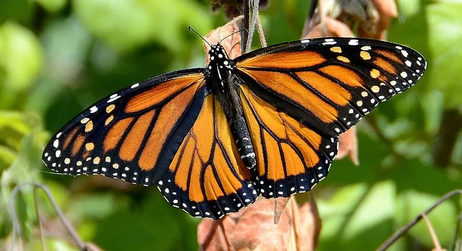

昆虫 · 动物界
黑脉金斑蝶 Danaus plexippus

以橙黑相间的翅纹和跨越数千千米的南北迁徙闻名，成虫吸食花蜜、幼虫专食马利筋，是北美最著名的蝴蝶之一。
- 分类
- 门节肢动物门纲昆虫纲目鳞翅目科蛱蝶科属斑蝶属
- 栖息环境
- 北美草原、农田边缘与花园，越冬于墨西哥中部高海拔冷杉林
- 地理分布
- 北美洲和中美洲，并扩散至南美、夏威夷、澳大利亚等地
- 保护级别
- IUCN 易危（VU）；北美迁徙种群受重点关注
物种志
黑脉金斑蝶翅展约 9–10 cm，翅面橙红色，翅脉黑色，外缘排列着黑白相间的斑点，雄蝶后翅中部还有一枚黑色性斑。幼虫身体有黑白黄相间的环纹，头部两侧伸出黑色肉质角，专食马利筋，并把植物中的强心苷储存在体内，使天敌避食。蛹为翠绿色，带金色斑点。
北美东部种群每年秋季从加拿大、美国北部出发，飞行约 4000 km 抵达墨西哥中部高海拔冷杉林越冬，春季再向北回迁，途中依靠太阳方位和地磁线索定向。雌蝶在马利筋叶背产卵，每只可产卵数百枚。栖息地丧失、农药使用和越冬林砍伐使迁徙种群明显减少，该物种已被评估为易危，各地正通过种植马利筋、保护越冬地和标记回收研究开展保护。
形态与习性
- 食性幼虫专吃马利筋；成虫吸食花蜜
- 翅展约 9–10 cm
- 寿命夏季世代约 2–5 周，越冬世代可达 8 个月
- 繁殖雌蝶在马利筋叶背产卵，每只可产卵 300–500 枚
- 迁徙北美东部种群每年往返约 4000 km
- 防御幼虫取食马利筋积累强心苷，使鸟类等天敌避食
趣味知识
- 越冬世代寿命可达 8 个月，是普通夏季世代的好几倍。
- 黑脉金斑蝶能利用太阳方位和地磁双重线索完成迁飞导航。
- 马利筋的强心苷被幼虫储存于体内，使成虫对鸟类有毒。
- 多代蝴蝶接力完成往返迁徙，没有一只蝶走完全程。
生态关系
- 捕食 → 马利筋 幼虫取食马利筋并获得毒素